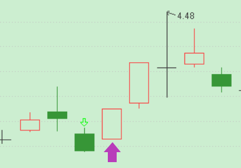

红K阳线_光头光脚阳线
作者：波哥
背景资料
上节课我们一起学习了K线周期，那么这节课我们一起认识一下红K阳线里的光头光脚阳线。
光头光脚阳线：

图中箭头所示就是光头光脚阳线
图中箭头所示，就是一个光头光脚阳线，开盘价格就是盘中最低价，收盘价收在盘中最高点，全天一直在多头控盘运行之下。次日价格展示的是一根中长阳线，多头继续攻击的态势。
在所有红K线中，光头光脚阳线是最能说明多头上攻决心的意图，特别是带有向上跳空缺口的光头光脚阳线，它代表场外资金愿意给出更大溢价进行抢筹，也预示着价格还有更高的上涨空间。图中光头光脚阳线前面2根K线都是收阴，但是当日是高开上攻，这会让前日恐慌扔掉筹码的人后悔不已。